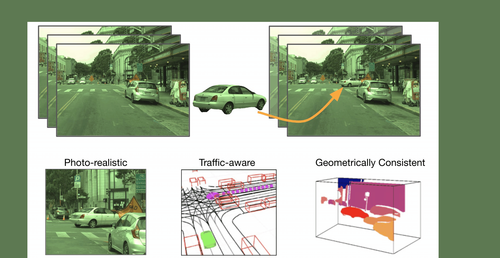

GeoSim: Realistic Video Simulation via Geometry-Aware Composition for Self-Driving
Overview Video
Abstract
We present GeoSim, a geometry-guided simulation procedure to insert dynamic objects into videos with greater realism. It helps enable scalable sensor simulation for training and testing autonomy systems, as well as applications like AR, VR, and video editing. We first create 3D assets from real-world data and then use them for simulation.

3D asset reconstruction
We propose a self-supervision model to automatically build vehicle asset bank from the wild without 3D groundtruth.
- Multi-sensor feature is extracted from camera and LiDAR.
- Per-vertex deformation is applied on a learnable mean-shape to predict shape.
- Silhouette is differentiably rendered from the predicted mesh and compared with the labels. LiDAR consisteny is also applied

Using the reconstructed 3D mesh, we can perform novel view warping of the source image to new target poses.
We build a large and diverse asset bank for simulation with over 8 000 unique vehicles.


Simulation Pipeline
GeoSim leverages the asset library to insert actors and simulate new images.
-
Step 1: Scenario Generation We first automatically generate a plausible placement and trajectory that complies with the existing traffic. An asset with a similar viewpoint is selected for rendering.

Automatic scenario generation -
Step 2: Occlussion-aware rendering We then render the selected asset at a new target pose. we account for occlusion by using dense depth from a pre-trained depth completion network. Additionally, since our assets are 3d, we can render them inside a graphics engines to obtain soft shadows.

Occlussion-aware rendering -
Step 3: Post composition: Finally, we perform post-image composition. We use a synthesis network to handle inconsistent illumination and inpaint the discrepancies at the boundary, so that the vehicle fits in seamlessly.

Post-image composition
Qualitative Results
Video results in 4K resolution (4096x2160)

Citation
@inproceedings{chen2021geosim,
title={GeoSim: Realistic Video Simulation via Geometry-Aware Composition for Self-Driving},
author={Yun Chen, Frieda Rong, Shivam Duggal, Shenlong Wang, Xinchen Yan, Sivabalan Manivasagam, Shangjie Xue, Ersin Yumer, Raquel Urtasun},
year={2021},
booktitle={CVPR},
}